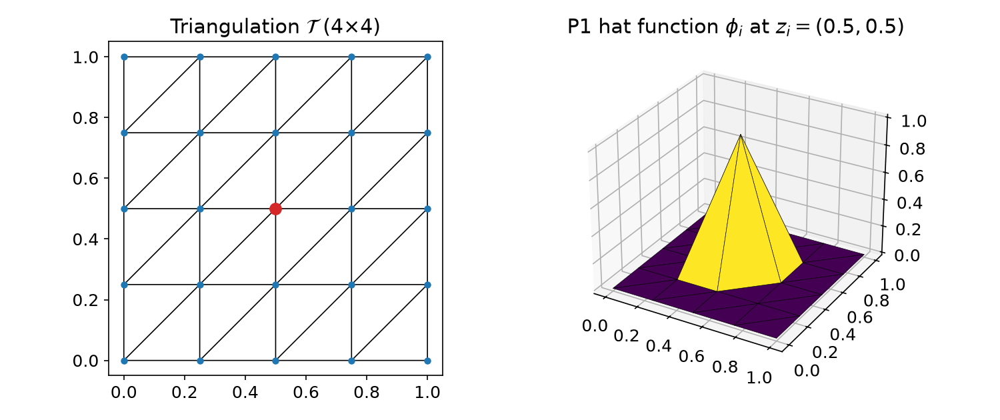
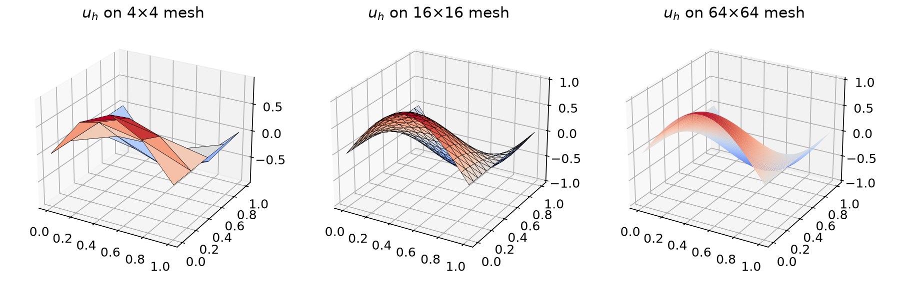
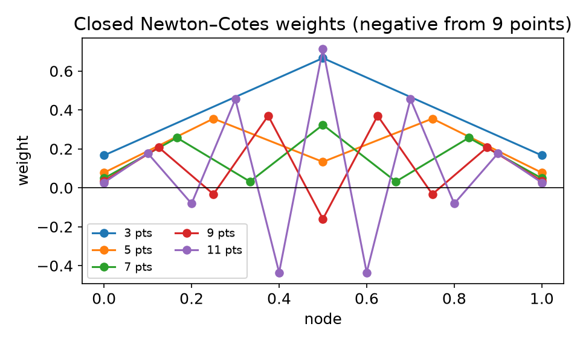
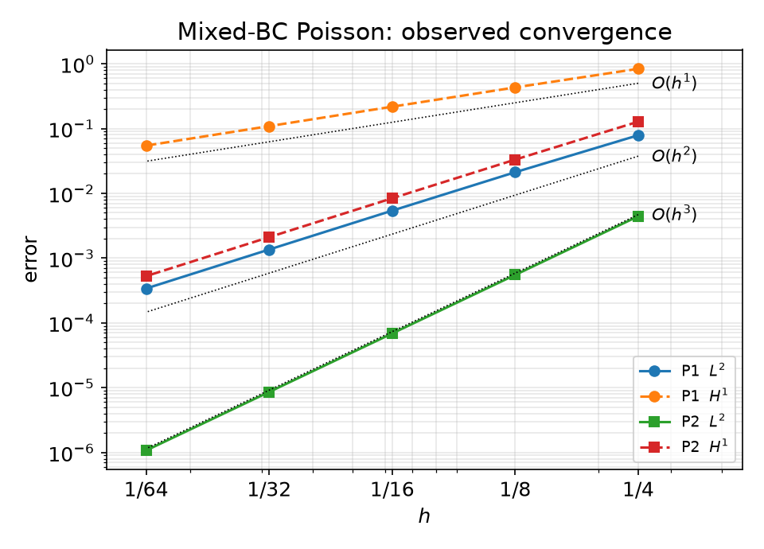

AI-based Materials and Process Simulation I
Week 01 — Course Introduction · Poisson’s Equation · Numerical Quadrature · Your First DOLFINx Solver
Process Systems Laboratory
Department of Chemical and Biomolecular Engineering, SeoulTech
Today
| Part | Topic | Time |
|---|---|---|
| 0 | Course introduction · computing environment · working with LLMs | 25 min |
| A | Theory — Poisson’s equation, triangulations, P1 space, weak form, linear system | 55 min |
| B | Numerical quadrature — exactness, Gauss rules, reference cells, Basix | 40 min |
| C | Implementation — the Poisson solver in DOLFINx 0.11, convergence | 40 min |
| D | LLM workflow demo · assignments | 20 min |
Lab notebook: W01_lab.ipynb · Assignments: W01_HW0.ipynb, W01_HW1.ipynb (due before Week 2)
Part 0 — Course Introduction
What this course is about
The finite element method, three ways
- Mathematics — why the method works: well-posedness, stability, convergence rates
- Implementation — how FEniCSx turns a weak form into a sparse linear system
- Application — materials and process problems: diffusion, flow, transport
AI-based: you will write most code with an LLM assistant — and you will use the mathematics to verify what it produces.
| Course | Focus |
|---|---|
| I (this term) | theory + FEniCSx internals + incompressible flow |
| II (next term) | solid & structural mechanics + coupled heat/mass transfer |
Course I roadmap
| Weeks | Block | Highlights |
|---|---|---|
| 1–4 | Finite elements | weak form, quadrature, Ciarlet’s element, meshes, DOF maps, interpolation |
| 5–7 | Analysis | Lax–Milgram, boundary conditions, Céa’s lemma, Aubin–Nitsche |
| 8–10 | Nonlinear & transient | Newton/SNES, θ-method, Cahn–Hilliard |
| 11–13 | Mixed & stabilized | Stokes, inf-sup, block preconditioners, SUPG |
| 14–15 | Navier–Stokes | IPCS, DFG cylinder benchmark, lid-driven cavity |
| 16 | Final project presentations | report + code due; no final exam |
Project proposal in Week 8. Weekly quiz (10 min) at the start of each lecture, starting Week 2.
The FEniCSx toolchain
| Component | Role | You meet it in |
|---|---|---|
| UFL | symbolic language for weak forms: inner(grad(u), grad(v))*dx |
Week 1 |
| Basix | reference elements, basis functions, quadrature rules | Weeks 1–2 |
| FFCx | compiles UFL forms to C kernels (one cell at a time) | Week 9* |
| DOLFINx | meshes, function spaces, assembly, I/O, MPI parallelism | every week |
| PETSc | sparse linear algebra, Krylov solvers, preconditioners, SNES | Weeks 1, 9, 12 |
*code generation is discussed when we derive Newton’s method.
We use DOLFINx 0.11. Most code on the internet (and in LLM training data) is for older versions — this matters!
Computing environment: Google Colab only
First cell of every notebook (≈ 3–5 min, once per runtime):
Then DOLFINx code goes in cells that start with
%%fenicsx -np 2The cell model
- each
%%fenicsxcell = a new MPI program - variables do not survive between cells
- save results:
np.savez("/tmp/fnx/...") - plot in ordinary cells (matplotlib)
- Colab has 2 CPUs: use
-np 1or-np 2for timings - restart runtime ⇒ re-run the setup cell
Assessment
| Component | Weight | Notes |
|---|---|---|
| Weekly assignments | 30% | executed notebook + results summary + AI-usage log |
| Weekly quizzes | 10% | closed-AI, 10 min |
| Midterm exam | 15% | closed-AI, proofs |
| Term project | 40% | proposal (W8) → report + code + presentation |
| Participation | 5% |
- Assignments are due before the next lecture; no late submissions.
- “Restart session and run all” must succeed, otherwise 0.
- Every number must come from a cell you ran and must be verified.
Working with LLM coding assistants
Encouraged for all coding work. But LLMs typically produce:
- outdated API — legacy
fenics, DOLFINx 0.5–0.10 - silent math errors — wrong signs, missing boundary conditions, unstable elements
- verification theater — “✅ solver verified” based on nothing
The workflow you follow every week
- Formulate the weak form by hand
- Prompt with context (API reference sheet)
- Read and annotate every line
- Verify — MMS rates, benchmarks,
-np 1=-np 2 - Log prompts, failures, fixes
You are the author of record: if you cannot explain a line you submitted, it counts as not done.
Part A — Poisson’s Equation and the Weak Form
§A1 The model problem
Model problem
Let \Omega = (0,1)^2. Given f, find u such that -\nabla^2 u = f \quad \text{in } \Omega
| Boundary | Type | Condition |
|---|---|---|
| x = 0 and x = 1 | Dirichlet | u = 0 |
| y = 0 and y = 1 | Neumann | \partial u / \partial n = 0 |
- Steady diffusion: temperature, concentration, electric potential, pressure in Darcy flow
- Two BC types on purpose — FEM treats them differently
- Test case this week: u_{ex} = \sin(\pi x)\cos(\pi y), hence f = 2\pi^2\sin(\pi x)\cos(\pi y)
§A2 Triangulations
Definition — Triangulation
A set of triangles \mathcal{T}=\{K_i\} with
- no overlaps: \operatorname{int}K_i\cap\operatorname{int}K_j=\emptyset
- full coverage: \bigcup_i K_i=\bar\Omega
- conforming: no vertex lies inside an edge of another triangle
h = \max_K \operatorname{diam}(K) — the mesh size.

§A3 The P1 finite element space
Definition — P1 space
V_h = \{ v \in C^0(\bar\Omega) : v|_K \text{ is linear for every } K\in\mathcal{T}\}
Dirichlet conditions are built into the space (essential conditions): \mathring{V}_h = \{ v \in V_h : v(0,y) = v(1,y) = 0 \} Neumann conditions are not imposed on the space — they come out of the weak form (natural conditions).
Derivatives. v\in V_h is not differentiable across edges, but edges have zero area: the derivative taken inside each triangle is a well-defined element of L^2(\Omega), \|f\|_{L^2(\Omega)} = \Big(\int_\Omega |f|^2\,dx\Big)^{1/2}.
§A4 Deriving the weak form
Multiply -\nabla^2 u = f by a test function v\in\mathring{V}_h and integrate: -\int_\Omega v\,\nabla^2 u\,dx = \int_\Omega v f\,dx
Integrate by parts (divergence theorem): \int_\Omega \nabla v\cdot\nabla u\,dx - \int_{\partial\Omega} v\,\frac{\partial u}{\partial n}\,ds = \int_\Omega v f\,dx
| Boundary | Why the boundary term vanishes |
|---|---|
| x=0,1 | v = 0 there, because v \in \mathring{V}_h (essential BC) |
| y=0,1 | \partial u/\partial n = 0 (natural BC) |
§A4 The finite element approximation
Galerkin problem
Find u_h \in \mathring{V}_h such that \underbrace{\int_\Omega \nabla u_h\cdot\nabla v\,dx}_{a(u_h,\,v)} = \underbrace{\int_\Omega f v\,dx}_{L(v)} \qquad \forall\, v \in \mathring{V}_h
Features
- trial and test functions in the same space
- Neumann data enter through L (here: zero)
- Dirichlet data enter through the space
Questions for this course
- Does u_h exist, is it unique? (Week 5)
- How large is u - u_h? (Week 7)
- Does it converge as h\to0, how fast? (Week 7)
- How do we compute it? (today)
§A5 From the weak form to K\mathbf{u}=\mathbf{f}
Nodal (hat) basis: \phi_i(z_j) = \delta_{ij} at the free vertices z_j. Write u_h = \sum_j u_j\phi_j and test with v = \phi_i:
\sum_j \underbrace{\int_\Omega \nabla\phi_j\cdot\nabla\phi_i\,dx}_{K_{ij}}\;u_j = \underbrace{\int_\Omega f\,\phi_i\,dx}_{f_i}, \qquad i = 1,\dots,\hat M
| Property | Consequence |
|---|---|
| \phi_i has local support | K is sparse (≈ 7 nonzeros per row for P1 in 2D) |
| K_{ij} = \sum_{K\in\mathcal{T}} \int_K \cdots | assembly: loop over cells, add local contributions |
| integrands are polynomials (times f) | evaluate with quadrature — Part B |
| K symmetric positive definite | Cholesky / CG; LU in practice for small problems |
§A6 What the computation shows

| Mesh | \|u-u_h\|_{L^2} | rate | \lvert u-u_h\rvert_{H^1} | rate |
|---|---|---|---|---|
| 8×8 | 2.12\times10^{-2} | — | 4.31\times10^{-1} | — |
| 16×16 | 5.40\times10^{-3} | 1.97 | 2.17\times10^{-1} | 0.99 |
| 32×32 | 1.36\times10^{-3} | 1.99 | 1.09\times10^{-1} | 1.00 |
| 64×64 | 3.40\times10^{-4} | 2.00 | 5.45\times10^{-2} | 1.00 |
\|u-u_h\|_{L^2} = O(h^2), |u-u_h|_{H^1} = O(h) — proved in Week 7 (Céa + Aubin–Nitsche).
§A7 Exercises (pen and paper)
Exercise 1.11 — variable coefficient (→ HW0 Part C)
-\nabla\cdot\big((2+\sin 2\pi x)\nabla u\big) = f in \Omega, u = 0 on \partial\Omega. Derive the Galerkin problem.
Exercise 1.12 — inhomogeneous Dirichlet
-\nabla^2 u = e^{xy}, u = x(1-x) on \partial\Omega. Which space do trial and test functions live in now?
Exercise 1.13 — Robin condition
-\nabla^2 u = \frac{1}{1+x^2+y^2}, u + \frac{\partial u}{\partial n} = x(1-x) on \partial\Omega. Where does the Robin term go?
Part B — Numerical Quadrature
§B1 Exactness
Quadrature rule and degree of exactness
\int_K f(x)\,dx \approx \sum_{q} w_q f(x_q), \qquad \text{exact for all } p\in\mathcal{P}_k(K) \;\Rightarrow\; \text{degree of exactness } k
| Rule on [0,1] | Points | Weights | Exactness |
|---|---|---|---|
| Midpoint | 1/2 | 1 | 1 |
| Simpson | 0,\,1/2,\,1 | 1/6,\,4/6,\,1/6 | 3 |
| Gauss, 2 pts | \frac12\pm\frac{1}{2\sqrt3} | 1/2,\,1/2 | 3 |
Gauss optimality
m Gauss points (roots of the Legendre polynomial) are exact up to degree 2m-1, and no m-point rule can do better. (proof: HW1 Q1)
§B2 Why not equally spaced points?

Closed Newton–Cotes weights from the Vandermonde system \sum_q w_q x_q^j = \frac{1}{j+1}:
| Points | min weight |
|---|---|
| 3 | 0.167 |
| 7 | 0.032 |
| 9 | −0.160 |
| 11 | −0.435 |
Negative weights ⇒ cancellation, round-off amplification, Runge phenomenon. (HW1 Q3)
§B3 Reference cells
Every integral is pulled back to a reference cell \hat K: \int_K f(x)\,dx = \int_{\hat K} f\big(F_K(X)\big)\,|\det J_K|\,dX \approx \sum_q w_q\, f\big(F_K(X_q)\big)\,|\det J_K(X_q)|
| Cell (Basix) | Reference domain | \sum w_q |
|---|---|---|
interval |
[0,1] | 1 |
triangle |
(0,0),(1,0),(0,1) | 1/2 |
quadrilateral |
[0,1]^2 | 1 |
tetrahedron |
unit simplex | 1/6 |
hexahedron |
[0,1]^3 | 1 |
- points and basis values computed once on \hat K
- only J_K changes from cell to cell
- straight-sided triangles: J_K is constant
- triangles from squares: Duffy transform x=\hat x,\; y=\hat y(1-\hat x)
§B4 Quadrature in Basix
Default rules in Basix 0.11 — number of points for requested degree k:
| k | 1 | 2 | 3 | 4 | 5 | 6 | 8 |
|---|---|---|---|---|---|---|---|
| interval | 1 | 2 | 2 | 3 | 3 | 4 | 5 |
| triangle | 1 | 3 | 6 | 6 | 7 | 12 | 16 |
| quadrilateral | 1 | 4 | 4 | 9 | 9 | 16 | 25 |
| tetrahedron | 1 | 4 | 5 | 14 | 15 | 24 | 45 |
Triangle, degree 6:
defaultandxiao_gimbutasuse 12 points, collapsedgauss_jacobiuses 16.
§B5 Quadrature inside DOLFINx
\int_\Omega \sin\pi x\,\sin\pi y = (2/\pi)^2, 32×32 mesh:
| q | error |
|---|---|
| 1 | 2.2\times10^{-4} |
| 2 | 2.0\times10^{-8} |
| 3 | 2.2\times10^{-8} |
| 4 | 6.5\times10^{-13} |
| 6 | 6.7\times10^{-16} |
- default: UFL estimates the polynomial degree of the integrand
- non-polynomial coefficients (\sin, \exp) → degree is estimated
- too low q in a FE solve = variational crime (HW1 Q4)
allreduce: each rank only integrates its own cells
Part C — The Poisson Solver in DOLFINx 0.11
§C1 Math → code
| Mathematics | DOLFINx 0.11 |
|---|---|
| triangulation \mathcal{T}_h of (0,1)^2 | mesh.create_unit_square(comm, N, N) |
| V_h = continuous P1 | fem.functionspace(msh, ("Lagrange", 1)) |
| u_{ex}, f=-\Delta u_{ex} | ufl.SpatialCoordinate, UFL expressions |
| a(u,v)=\int\nabla u\cdot\nabla v | ufl.inner(ufl.grad(u), ufl.grad(v)) * ufl.dx |
| L(v)=\int f v | f * v * ufl.dx |
| u_h=0 on x=0,1 (essential) | locate_entities_boundary → locate_dofs_topological → dirichletbc |
| \partial u/\partial n = 0 (natural) | nothing to write |
| assemble and solve K\mathbf{u}=\mathbf{f} | LinearProblem(a, L, bcs=[bc], petsc_options_prefix=...).solve() |
| \|u-u_h\|_{L^2} | sqrt(allreduce(assemble_scalar(form((uh-u_ex)**2*dx)))) |
§C2 The complete solver
from mpi4py import MPI
import numpy as np, ufl
from dolfinx import fem, mesh, default_scalar_type
from dolfinx.fem.petsc import LinearProblem
comm = MPI.COMM_WORLD
msh = mesh.create_unit_square(comm, 32, 32)
V = fem.functionspace(msh, ("Lagrange", 1))
x = ufl.SpatialCoordinate(msh)
u_ex = ufl.sin(ufl.pi * x[0]) * ufl.cos(ufl.pi * x[1])
f = 2 * ufl.pi**2 * u_ex # f = -Δu_ex
u, v = ufl.TrialFunction(V), ufl.TestFunction(V)
a = ufl.inner(ufl.grad(u), ufl.grad(v)) * ufl.dx # a(u, v)
L = f * v * ufl.dx # L(v)
walls = mesh.locate_entities_boundary(msh, 1, lambda x: np.isclose(x[0], 0) | np.isclose(x[0], 1))
bc = fem.dirichletbc(default_scalar_type(0), fem.locate_dofs_topological(V, 1, walls), V)
uh = LinearProblem(a, L, bcs=[bc], petsc_options_prefix="poisson_",
petsc_options={"ksp_type": "preonly", "pc_type": "lu"}).solve()
err = np.sqrt(comm.allreduce(fem.assemble_scalar(fem.form((uh - u_ex)**2 * ufl.dx)), op=MPI.SUM))§C3 Verification by convergence rates

Observed rate between meshes h_1, h_2: r = \frac{\log(e_1/e_2)}{\log(h_1/h_2)}
| L^2 | H^1 | |
|---|---|---|
| P1 | 2.00 | 1.00 |
| P2 | 3.00 | 2.00 |
Same numbers with -np 1 and -np 2.
Rates, not pictures, are the verification. A wrong solver can look smooth.
§C4 Same cost, different accuracy
| Discretization | DOFs | \|u-u_h\|_{L^2} |
|---|---|---|
| P1 on 16×16 | 289 | 5.40\times10^{-3} |
| P2 on 8×8 | 289 | 5.51\times10^{-4} |
- Same number of unknowns, 10× smaller error — higher order pays off for smooth solutions
- P2 needs a quadrature exact for degree ≥ 2 in the stiffness matrix, otherwise the matrix becomes singular (HW1 Q4)
- Why smooth matters, and what happens at corners and singularities → Week 7
Part D — LLM Workflow and Assignments
§D1 Live demo: prompting with context
Context: [DOLFINx 0.11 API reference sheet]
Problem: -Δu = f on the unit square, u = 0 on x=0 and x=1, ∂u/∂n = 0 on y=0 and y=1.
Weak form (derived by me): find u in V0 such that ∫∇u·∇v dx = ∫ f v dx for all v in V0.
Spaces: continuous P1 Lagrange.
Task: DOLFINx 0.11 script for %%fenicsx -np 2 that solves the problem with
u_ex = sin(πx)cos(πy), computes the L2 and H1 errors for N = 8, 16, 32, 64,
and prints the observed rates. MPI-safe.Then check, line by line:
§D2 Three kinds of LLM failure — and how to catch them
| Kind | Typical examples (not exhaustive) | Detection |
|---|---|---|
| Crashes | VectorFunctionSpace, solve(a == L, u, bc), dolfinx.io.gmshio, interpolation_points() |
the error message + API reference sheet §14 |
| Silent errors | sign of a source or flux term, BC on the wrong boundary, missing scatter_forward, wrong quadrature degree, unstable element pair |
MMS: compare with u_{ex}, observed rates, plot the BCs, -np 1 vs -np 2 |
| Verification theater | “✅ verified” from isfinite, a pretty plot, a residual of a different problem |
ask: would this check fail if the code were wrong? |
Crashes cost minutes. Silent errors cost weeks — or a wrong thesis chapter. HW0 Part B contains all three kinds.
Assignments — due before the Week 2 lecture
HW0 — Environment & LLM debugging
- A Colab + MPI check (20)
- B debug a broken LLM-generated solver: 2 crashes, 3 silent defects, 1 fake verification (50)
- C your own LLM-assisted solver for Exercise 1.11 with MMS verification (30)
HW1 — Quadrature accuracy
- Q1 Gauss optimality proofs (20)
- Q2 what Basix really delivers (25)
- Q3 Newton–Cotes vs Gauss on the Runge function (25)
- Q4 variational crimes in a FE solve (30)
Submit the executed .ipynb files (restart & run all) with the AI-usage log filled in. Week 2 opens with a 10-minute quiz on today’s material.
Summary
| Concept | Key idea | DOLFINx |
|---|---|---|
| Weak form | multiply, integrate by parts, use BCs | UFL form |
| Essential vs natural BC | Dirichlet in the space, Neumann in the form | dirichletbc vs nothing |
| P1 space, hat functions | continuous, piecewise linear, \phi_i(z_j)=\delta_{ij} | functionspace(msh, ("Lagrange", 1)) |
| Linear system | K\mathbf{u}=\mathbf{f}, sparse, assembled cell by cell | LinearProblem |
| Quadrature | Gauss: m points → degree 2m-1 | basix.make_quadrature |
| Verification | observed rates h^2 (L^2), h (H^1) for P1 | assemble_scalar + allreduce |
Next week — Ciarlet’s finite element
Vandermonde matrices, unisolvence, Lagrange elements of any degree, Hermite and Argyris elements, Basix tabulation.